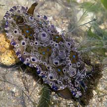
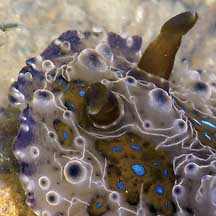
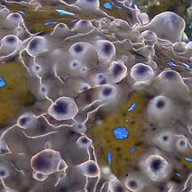
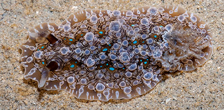
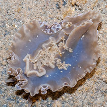
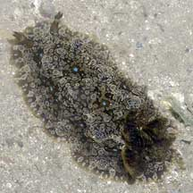
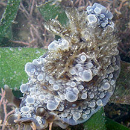
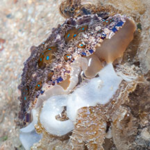
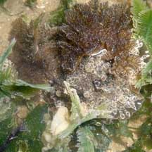
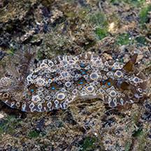

|
|
| nudibranchs text index | photo index |
| Phylum Mollusca > Class Gastropoda > sea slugs > Order Nudibranchia |
| Blue-spot
nudibranch Dendrodoris denisoni Family Dendrodorididae updated May 2020 Where seen? This delightfully bobbled nudibranch with electric blue spots is sometimes seen among seagrasses and seaweeds on our Northern shores, as well as at Cyrene Reef. Often seen in numbers, and then not seen again for some time. Features: 5-10cm long. Broad, soft body with lots of bumps and pimples, and distinctive electric blue spots. Thick club-like rhinophores and large feathery gills. The animal is generally beige sometimes with a purplish or pinkish tinge. Younger animals may be more colourful than older ones. |
 Pulau Sekudu, May 05 |
 |
 |
| What does it eat? It eats sponges, possibly sponges that live in murky, mucky sites. It lacks a radula and jaws so it can't rasp or chew its food sponge. Instead, it secretes digestive juices onto the sponge and then sucks up the softened sponge. How is it the juices don't leak away into the surrounding water? Dr Bill Rudman explainshow structures around the mouth might help it form a seal around the feeding site. |
 Tanah Merah, May 09 |
 Underside. |
|
 Beting Bronok, Jul 07 |
 Tiny one, hardly wider than a seagrass blade. Cyrene Reef, Jun 08 Shared by Toh Chay Hoon on flickr. |
 Laying eggs. Sisters Island, Apr 14 |
| Blue-spot nudibranchs on Singapore shores |
On wildsingapore
flickr
|
| Other sightings on Singapore shores |
 Pulau Sekudu, Apr 06 |
 Berlayar Creek, Oct 17 Photo shared by Marcus Ng on flickr. |
|
| |
Links
|